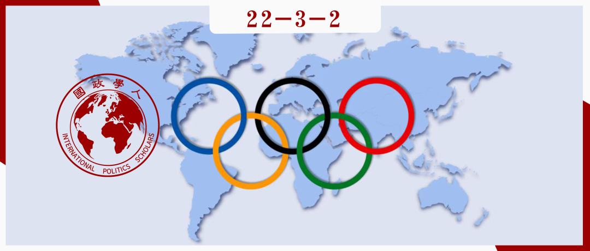
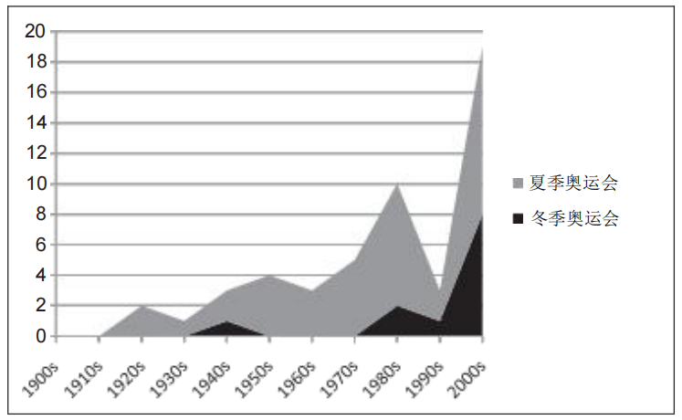
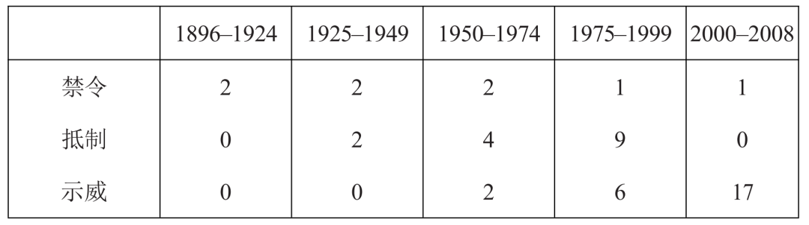

收录于合集

不纯粹的竞技：奥运会与政治博弈
作者： M. Patrick Cottrell，美国林菲尔德学院政治学助理教授；Travis Nelson，威斯康星大学普拉特维尔分校政治学助理教授。
编译： 房宇馨（国政学人编译员，北京外国语大学国际关系学院）
来源： Cottrell, M. P., & Nelson, T. (2011). Not just the Games? Power, protest and politics at the Olympics. European Journal of International Relations , 17(4), 729-753.

导读
奥林匹克运动力求非政治化，但却始终被无法摆脱被政治化的命运。2021年底，美国等西方国家表态称将“外交抵制”2022年北京冬奥会，刻意利用奥林匹克运动煽动意识形态对抗。类似的奥运会抵制手段在历史上早已屡见不鲜，几乎历届奥运会都无法摆脱当时国际政治斗争形势的影响。
本文的创新之处在于引入了原属国内政治语境的“抗争政治”来研究针对奥运会的政治化干扰现象，跟踪奥运会中抗争活动的嬗变。 作者认为，奥运会为抗争诉求方提供了一种极具吸引力的政治机会结构，不仅能够帮助诉求方在国际上获取资源和寻求盟友，而且能够借用奥运会强大的象征性和影响力来唤醒大众对其主张的关注，并为其集体诉求塑造某种合法性。
然而，本文的论证和结论需要我们客观看待。一方面，文章的数据分析及推导过程对于结论的解释力略显不足；另一方面，文章将围绕奥运会发生的抗争活动视作一个整体，较为浅显地分析了其中行为体类型、议题领域及总体数量的变化趋势，但并未涉及对于抗争活动自身类型的区分。显然，不同奥运会抗争活动的政治目的是不同的，这要求我们从两方面来看待抗争政治的意义。由于某些国际性议题超越了国家传统边界，部分抗争诉求方不得不从全球维度上来寻求解决之道。但除此之外，更多情况下，抗争政治成为了西方大国进行政治博弈的无理操纵手段。对此，文章仅注重对于奥运会抗争政治的学理性探讨，并未给出相应的反思，也未对奥运会和国际奥委会如何摆脱政治化影响给出有效的建议。结合文章所言，下一阶段学术探讨不仅需要对奥运会抗议政治的有效性进行进一步分析，还需要将关注焦点放置于如何有效扭转政治操纵对奥林匹克运动的负面影响上来。
摘要
奥运会是世界上最古老的国际性体育赛事之一。举办奥运会不仅能够为东道国带来巨大的声望和显著的经济效益，同时也能够激发民族主义热情，并对东道国的身份建构产生影响。更为重要的是， 奥运会时常成为国际政治抗争集中爆发的焦点 。自1936年纳粹德国举办柏林奥运会以来，历届夏季奥运会都曾发生过政治事件。然而，这样一个具有潜在理论吸引力的重大全球性事件却被主流国际关系文献所忽视。
本文认为， 通过围绕奥运会发起抗议活动，全球各层次的行为体在奥运会这一场合中行使着不同形式的政治权力 。所以，作者指出，奥运会为探究国际关系中的政治抗争（political contention）提供了一个有趣的案例。本文收集了自1896年（第一届现代奥运会）至2008年期间历届奥运会中发生的所有抗议活动的原始数据，来探究奥运会与抗争政治的关系及其演变趋势。
编译
01
奥运会与抗争政治
抗争政治（contentious politics）是指“当（a）至少有一国政府是诉求方、诉求对象或者是第三方，且（b）一旦诉求实现，将影响至少一个诉求方的利益时，诉求方及其诉求对象之间偶发的、公开的、集体的互动”。虽然这一概念传统上属于国内政治领域，但奥运会可将抗争政治的概念进一步引向国际政治抗争的研究。
现实主义者可能会将大型国际体育赛事视为大国进行国际政治竞争的场合。 20世纪30年代的德国和21世纪的新兴大国都利用奥运会来展示本国实力和拓展外交空间。冷战期间，美国和苏联各自策划了大规模的奥运会抵制行动，以此向对方施加压力。然而，现实主义的观点也表明，奥运会对国际关系的演变不会产生独立的影响，因为强国只是利用奥运会来增加其在国际体系中的相对优势。因此，从这一角度来看， 现实主义的解释受到了其国家中心主义和唯物主义本体论的限制 。例如，现实主义无法解释国际奥委会（International Olympic Committee，IOC）为何能够成为一个可以约束国家行为的强大行为体，也无法解释国家为何会在几乎没有利润回报的情况下依旧坚持申办奥运会。对于这样的问题， 政治机会结构（political opportunity structure）理论可能更适合阐明奥运会在国际政治中的广泛意蕴。
正如克利福德·鲍勃（Clifford Bob）所言，尽管全球化时代为抗议现象带来了某种赋能效应（empowering effect），但并非所有抗议中的诉求方都能获得意义重大的国际性承认或产生影响。除此以外，诉求方（例如寻求扩大影响力的地方性团体）在国内充满竞争的环境中运作，往往难以争夺本就稀缺的资源，也可能难以寻求潜在盟友的支持。所以， 抗议场合（venue）的选择非常重要。在这个意义上，奥运会提供了一种不同于其他任何国际赛事的政治机会结构。 政治机会结构被定义为“鼓励或阻止人们采取集体行动的稳定政治环境——但这种政治环境不一定是正式的、永久性的或全国性的”。政治机会结构理论通常强调动员诉求方的外部资源，而外部机会结构更容易被弱势或无组织行为体利用。因此， 奥运会这样的场合为国内行为体提供了更大的“外部化”和进入全球舞台的潜力，同时也将促进跨国抗议联盟的形成。
从政治机会的角度来看，奥运会能够广泛吸引行为体进行政治抗争的原因有如下四点：
第一，奥运会的参与度与影响力无可比拟。 几乎所有国家都会参加奥运会，国家元首经常出席奥运会开幕式，来自不同背景和国籍的人和团体参加奥运会比赛并在奥运村进行互动。同时，全球媒体都会对奥运会进行报道。因此， 任何形式的抗议都有可能引起媒体和各地民众的广泛关注，这在一定程度上满足了抗争诉求方的主要目标。
第二，奥运会可以为抗争诉求方带来有影响力的潜在盟友和支持者。 鉴于奥运会的高知名度和高参与度，将会有更多个人、网络、政府和其他行为体与抗争诉求方结成新的联盟。此外，当抗争对象是奥运会东道国政府时，抗争诉求方可以利用奥运会来向东道国政府施加国内和国际压力以改变某一特定政策。凯克（Margaret Keck）和西金克（Kathryn Sikkink）提出了跨国行动主义的“回飞镖模式”（boomerang pattern），即 当国家与其国内行为体之间的互动渠道受阻时，抗争诉求方就会绕过国家，直接寻求国际盟友，试图从外部向该国施加压力。 所以，奥运会可能会加大对东道国政府的回飞镖压力。
第三，被赋予特殊象征意义的奥运会本身就适用于提出共同主张并扩大政治机会。 根据《奥林匹克宪章》，奥林匹克运动的目标是“使体育为人类的和谐发展服务，以促进和建立一个维护人类尊严的和平社会。”从这个意义上说， 奥运会是一个对话的舞台 。《宪章》所载的“奥林匹克主义”（Olympism）概念使抗争诉求方能够利用现有制度作为陪衬，来重新界定其进行诉求的特定问题。因此， 奥运会为抗争诉求方提供了强大的外部象征性资本资源，有助于在有类似诉求的活动人士之间形成横向联系，从而增加了抗争诉求方的政治机会。
02
现代奥运会中的国际政治抗争
现代奥运会已有100多年的历史。在此期间，围绕奥运会进行的抗议活动也发生了实质性的变化，其演进过程中的诸多拐点大都为人所熟知。两次世界大战期间，部分国家针对奥运会发起了一连串的抵制和禁令，以1936年的柏林奥运会为甚。此后，非洲国家集体抵制1976年蒙特利尔奥运会，美国抵制1980年莫斯科奥运会，苏联抵制1984年洛杉矶奥运会，使这场抵制浪潮最终达到了顶峰。1972年慕尼黑奥运会上对以色列运动员的恐怖袭击也在历史上刻下了印记。最近的几届奥运会虽然没有出现如此严重的抵制或政治暴力，但在韩国等国被选为奥运会东道主等问题上仍存在重大争议。本文通过系统地考察自1896年以来有关奥运会的抗议活动来探究其演进的历程。
1.1 概念界定
在奥运会中，政治性抗争最基本的形式是抗议。 抗议是一个宽泛的概念，指一系列旨在表示不赞成及说服或强迫他人改变其行为的行动。 在奥林匹克运动会的背景下，抵制、恐怖袭击、国际奥委会颁布禁赛令以及活动团体的示威，都属于抗议行为。 但本文所选择的抵制、攻击、禁令和示威活动受到以下标准的限制。
第一，关于抗议活动的规模。 本文所采用的数据集仅包括那些至少有10人积极参与的抗议活动，以确保这些抗议活动具有良好的组织性并且可以产生较为广泛的政治影响。这一标准排除了某些由个别运动员或活动家发起的孤立抗议或抵制活动，如1998年挪威顶级滑雪运动员泰耶·哈孔森（Terje Haakonsen）宣布个人抵制长野冬奥会，以抗议国际奥委会决策过程的不透明。
第二，关于抗议活动的实际举行情况。 本文排除了声称要发起抗议但实际上并未实施的抗议活动。例如，美国在1936年威胁抵制柏林奥运会，伊拉克和其他中东国家也曾威胁抵制1952年的赫尔辛基奥运会（以抗议以色列参赛）。
第三，关于抗议活动的性质。 本文仅选择针对奥运观众的、具有明显政治性质的抗议活动，排除了涉及比赛判罚及结果或参赛运动员使用违禁药物等问题的抗议类型。
1.2 编码
本文利用LexisNexis数据库提供的英文报纸报道对1896年至2008年间发生的奥运会抗议事件进行了编码和识别。作者检索了关于奥运会的示威、抵制、禁令、恐怖袭击和一般性抗议的报道，筛选出了符合上述标准的所有案例。图1显示了1896年至2008年期间历届夏季和冬季奥运会抗议事件的数量，表1根据三种主要抗议类型（禁令、抵制和现场示威）对这些事件进行了细分。

图1 奥运会抗议事件
表1 按类型划分的奥运会抗议活动

03
奥运会中的权力与抗议活动
通过数据分析可知，奥运会的抗议活动存在四大趋势：
第一，最直观的趋势是奥运会抗议活动的数量在随着时间显著增加。 从20世纪70年代开始，抗议活动开始成为奥运会的家常便饭。现今，针对奥运会的抗议活动逐渐将火力分散至奥运会开幕式前的火炬传递上。例如，1996年的亚特兰大奥运会和2006年都灵冬奥会之前，都曾有抗议者试图扰乱火炬传递活动。同时，随着奥运会的参赛国家和参赛人数的提升，媒体对奥运会的报道也大幅增加，互联网的发展使奥运会的影响力进一步扩大，使奥运会对抗议活动组织者的吸引力大大增加。
第二，利用奥运会进行政治抗争的行为体类型更为多元，使用的抗争方法也更加多样。 从第一次世界大战到20世纪80年代，奥运会抗争活动的主要形式是以国家为主体的抵制或颁布禁赛令。例如，在一战后，德国和其他战败国被禁止参加1920年安特卫普奥运会。然而，如表1所示， 以国家为主体的抵制和禁令呈现出了明显的下降趋势，跨国行为体发起的示威活动开始逐渐成为奥运会抗议活动的最主要形式。 例如，绿色和平组织（Greenpeace）等非国家组织正在利用奥运会来宣传其主张。
此外，近些年来，奥运会抗议活动的目标和方式也与之前大不相同。冷战时期，以国家为主体的奥运会禁令和抵制活动主要发挥了杠杆政治（leverage politics）的作用。然而，随着抗议的形式转变为跨国倡议网络（Transnational advocacy networks，TANs）和非政府组织的现场示威，杠杆政治越来越被象征政治（symbolic politics）和信息政治（information politics）所取代。这些 非政府组织和网络正在利用奥运会来构建和发展自身的“符号”（symbols），向广大国际观众传达新信息。
第三，奥运会抗议所涵盖的议题领域也表现出了明显的扩大和深化趋势。 在20世纪90年代末，抗议活动的目标可主要分为两个部分：一部分是国家抗议其他国家的社会政策、军事活动，另一部分是奥运会东道国国内的社会活动家借机抗议政府的社会和经济政策。前者涉及因实施种族隔离政策而被撒哈拉以南非洲国家抵制参加奥运会的南非和罗得西亚（津巴布韦旧称），以及因在苏伊士运河战争中支持埃及和出兵匈牙利、阿富汗、立陶宛而遭到西方抵制的苏联。后者最突出的代表是在1968年墨西哥城奥运会和1988年汉城奥运会中发生的学生抗议活动。而 在过去10年中，奥运会抗议活动开始更多地关注跨国性议题，反全球化组织、环保组织、动物保护组织等团体也越来越多地成为抗议活动的主要发起方。
第四，尽管抗议活动在不断增加，但历任奥运会东道国和国际奥委会都在始终对抗议活动进行坚决地抵制。 国际奥委会在尽可能使奥运会不受政治的影响。《国际奥委会宪章》明确提出奥运会非政治化原则，规定“任何奥运会场地、场馆或其他地区都不允许进行任何形式的示威或政治、宗教和种族宣传”。同样，奥运会东道国也在尽力限制奥运会场馆及其附近的政治示威活动。1980年莫斯科奥运会期间，苏联曾多次逮捕抗议者；1968年墨西哥城奥运会期间，墨西哥政府甚至命令军方向学生抗议群体开火。在2002年的盐湖城冬奥会中，美国政府设立了允许抗议但抗议活动需受到限制和监控的特定区域，显著地抑制了抗议活动的实际效果。
04
超越五环：奥运会抗议的国际政治意涵
20世纪奥运会抗议活动的增长在很大程度上反映了宏观的历史进程，如民族国家的崛起、体育运动的国别化以及整个国际体系中相互依存度的增强。
首先，奥运会能够为探究机会结构在政治抗争中的重要性以及抗议在国际政治中的演变提供一个有趣的案例。 对许多人来说，“奥林匹克精神”超越了国界与文化。前国际奥委会主席萨马兰奇（Juan Antonio Samaranch）认为，奥林匹克运动比任何宗教都更具普遍性。这种普世性使奥运会对各种行为体均产生了巨大的政治吸引力。
然而，政治机会结构的存在并不意味着抗议一定有效。 西德尼·泰罗（Sidney Tarrow）指出了跨国抗议中进行辩论和说服的三大进程，这些进程放在奥运会背景下也是可行的：（1）全球性架构（global framing），即利用国际符号来架构国内冲突并在某种程度上促进抗议解决的内部化（internalization）；（2）扩散（diffusion），即抗议活动从一个地点转移到另一个地点；规模转变（scale shift），即集体行动中的协调水平在行动开始至结束的过程中发生了变化；（3）外部化（externalization），即国内抗议垂直投射到国际机构或其他外国行为体之上；联盟形成（coalition formation），即不同国家中抗议诉求相似的行为体之间形成跨国联盟。
当抗争者成功通过上述任意一个进程促成了既定规范的变革，那便意味着这些抗争者重塑或重新定义了既定规范和新规范之间的联系。换言之， 抗争诉求方利用奥运会这一政治机会结构来作为构建其论点的参考点（reference points），为其诉求议题架构一个有效的规范框架，同时提高人们对此议题的认知，并证明当前的某些行为与奥林匹克精神是不相符合的。 例如，1988年汉城奥运会期间，抗议者严厉谴责韩国政府对朝韩联合举办奥运会的排斥，违反了“国际包容”的奥林匹克基本原则。
第二，国际奥委会的作用值得进行进一步探究。 尽管国际奥委会的规模较小，但却展出了与其体量不相称的国际政治影响力。 在奥运会主办城市、奥运会参赛代表团以及奥运会比赛项目的选择上，国际奥委会充当了守门人的角色，使其可以在这些重要问题上行使权力。
奥运会主办城市的遴选过程完全由国际奥委会主导，其投票过程有时甚至不对外公开，这使得国际奥委会时常卷入政治非议之中。 例如，在冷战和朝韩对峙的阴影下，国际奥委会选择首尔来主办1988年的夏季奥运会，引发了极大关注。为平息舆论压力，国际奥委会主席萨马兰奇进行了高层外交，与朝鲜进行了谈判，并获得了苏联不抵制奥运会的承诺，保证奥运会得以顺利举行。
允许哪些政治实体派遣代表团参加奥运会是国际奥委会的另一项权力。 例如，在1992年巴塞罗那奥运会上，西班牙因巴尔干冲突和联合国指令为由拒绝南斯拉夫参赛，但在国际奥委会的坚持下，南斯拉夫运动员被允许以个人身份参加比赛。
国际奥委会还有权力决定奥运会的比赛项目。 奥运会比赛项目的选择具有巨大的经济和象征意义，这一定程度上导致国际奥委会成为了一个充满矛盾性的实体。 一方面，国际奥委会把自身塑造成人道主义和世界和平的化身，但另一方面国际奥委会又是一个依靠奥林匹克品牌来寻求盈利的组织。 例如，作为国际奥委会的官方赞助商，耐克等公司更倾向于支持利润率更高的高尔夫项目进入奥运会，而非棒球和垒球。所以，奥运会已取消了棒球和垒球项目，而正式将高尔夫列为奥运会比赛项目。
第三，奥运会强化了由国家主导的国际体系。 尽管奥运会为非国家行为体提升影响力提供了跳板，但国家依旧是奥运会的核心单元和焦点所在。如阿尔弗雷德·赛恩（Alfred Erich Senn）所言， 大国通过奥运会展示其实力，小国凭借出众的体育成绩获得认可，而新成立的国家可通过开幕式上的代表团入场仪式（Parade of Nations）来获得全球观众对其国际社会成员身份的确认（validation） 。
05
结论
随着时间的推移，有关奥运会的抗议活动在持续增多，奥运会抗议活动的性质已经从以国家抵制和国家禁令为主转变为以跨国活动者的现场示威居多，抗议所涵盖的议题领域也表现出了明显的扩大和深化趋势。而在此过程中，国际奥委会能够始终发挥守门人的作用，在影响国家行为方面起到了重要作用。正是这些因素使得奥运会不仅仅是一项体育赛事，而是一种重要的政治、社会、经济和文化现象。但本文认为，尽管社会运动、跨国宣传网络和相关团体在奥运会抗议活动中占据主导地位，但其抗议活动的有效性依然备受质疑。
词汇积累
国际奥委会 International Olympic Committee，IOC
政治机会结构 political opportunity structure
抗争政治 contentious politics
赋能效应 empowering effect
“回飞镖模式” boomerang pattern
奥林匹克主义 Olympism
跨国网络倡议 Transnational advocacy networks，TANs
象征政治 symbolic politics
信息政治 information politics
审校 | 赵怡雯 王图梓
排版 | 张佳 梁羽
文章观点不代表本平台观点，本平台评译分享的文章均出于专业学习之用, 不以任何盈利为目的，内容主要呈现对原文的介绍，原文内容请通过各高校购买的数据库自行下载。

国政学人
支持学术公益与知识传播
微信扫一扫赞赏作者 __赞赏
已喜欢，对作者说句悄悄话
取消 __
发送给作者
发送
最多40字，当前共字
上一页 1/3 下一页
长按二维码向我转账
支持学术公益与知识传播
受苹果公司新规定影响，微信 iOS 版的赞赏功能被关闭，可通过二维码转账支持公众号。